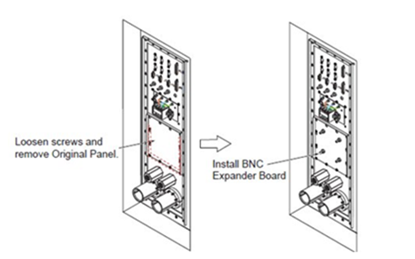

- 00000018WIA30C9CF20GYZ
- id_131062451.1
- Jul 6, 2019 12:03:29 AM
Spike Noise Triangulator Tool
The Spike Noise Triangulator Tool (SNT) (Part Number 5191921) and BNC Expander Board (Part Number: 5366397), provide a method to isolate White Pixel Noise sources by positioning a number of antennas to determine the source of the noise.
Training is required before using the tool. The training can consist of On-the-Job training with another engineer that is familiar with the tool, or by taking the MR Advanced Service class at HCI.
Tool Setup
-
See Spike Noise Triangulator Tool Information Card: 995556.pdf. This document contains information on the proper setup and use of this tool.
-
Install the BNC Expander Board:
-
Loosen screws and remove the original panel from penetration panel.
-
Install the Install the BNC Expander Board to penetration panel.
Figure 1. How to install BNC Expander Board 
-
Parts List
Cables cannot be ordered individually, and can only be replaced as a set of four to maintain proper propagation delay.
| Qty | Description | Part Number | FRU |
|---|---|---|---|
| 1 | White Pixel Field Test Kit | 5180139 | N/A |
| 1 | Oscilloscope 1GHz/4ch | 5191751 | N contact Dist-Tron |
| 1 | Bias Tee Block Assembly | 5191329 | N contact Dist-Tron |
| 1 | Power Supply | 5191512 | Y stocked at GPRS |
| 1 | Pre-Amp Assembly | 5191358 | N contact Dist-Tron |
| 4 | 25MHz Hi-Pass Filter | 5191357 | N contact Dist-Tron |
| 4 | 300MHz Hi-Pass Filter | 5191575 | N contact Dist-Tron |
| 1 | Cable, SMA-M, 7ft., Yellow | 5191277-10 | Part of Cable Set 1, contact Dist-Tron |
| 1 | Cable, SMA-M, 7ft., Blue | 5191277-11 | Part of Cable Set 1, contact Dist-Tron |
| 1 | Cable, SMA-M, 7ft., Pink | 5191277-12 | Part of Cable Set 1, contact Dist-Tron |
| 1 | Cable, SMA-M, 7ft., Green | 5191277-13 | Part of Cable Set 1, contact Dist-Tron |
| 1 | Cable, BNC-M, 7ft., Yellow | 5191277-14 | Part of Cable Set 2, contact Dist-Tron |
| 1 | Cable, BNC-M, 7ft., Blue | 5191277-15 | Part of Cable Set 2, contact Dist-Tron |
| 1 | Cable, BNC-M, 7ft., Pink | 5191277-16 | Part of Cable Set 2, contact Dist-Tron |
| 1 | Cable, BNC-M, 7ft., Green | 5191277-17 | Part of Cable Set 2, contact Dist-Tron |
| 1 | Cable, BNC-M, 30ft., Yellow | 5191277-18 | Part of Cable Set 3, contact Dist-Tron |
| 1 | Cable, BNC-M, 30ft., Blue | 5191277-19 | Part of Cable Set 3, contact Dist-Tron |
| 1 | Cable, BNC-M, 30ft., Pink | 5191277-20 | Part of Cable Set 3, contact Dist-Tron |
| 1 | Cable, BNC-M, 30ft., Green | 5191277-21 | Part of Cable Set 3, contact Dist-Tron |
| 1 | Cable, BNC-M, 65ft., Yellow | 5191277-22 | Part of Cable Set 4, contact Dist-Tron |
| 1 | Cable, BNC-M, 65ft., Blue | 5191277-23 | Part of Cable Set 4, contact Dist-Tron |
| 1 | Cable, BNC-M, 65ft., Pink | 5191277-24 | Part of Cable Set 4, contact Dist-Tron |
| 1 | Cable, BNC-M, 65ft., Green | 5191277-25 | Part of Cable Set 4, contact Dist-Tron |
| 4 | Antenna | 5191910 | Y stocked at GPRS |
User Notes
-
The SNT senses electrical spike noise created from white pixel sources. The tool can resolve the time-of-flight for spike signals to within 1ns difference between the antennas. Spike noise travels at a speed of 30cm (1 foot) per ns. The user is provided with 4 antennas that can be arbitrarily placed in a manner to converge onto the spike source location. The concept works, but only if the user is trained. Proper on-the-job training includes scope setup skills, waveform interpretation, antenna array setup and -- most important -- multiple source discrimination tactics. First-time users should always work with their ZSE/RSE or another Service Engineer who has several days of experience troubleshooting with the tool.
-
Each cable is cut to a tolerance of 3cm. If a cable fails, all four of the same-length cables must be replaced. The cable fabrication process has a significant propagation delay variance between date codes. Test results with two different date codes resulted in errors equivalent to 30cm on a 20m cable. To address this, the manufacturer will continue to assemble kits with cables having identical date codes. The manufacturer also verifies that specifications are met with a test that measures electrical length. So do not replace cables individually.
-
Follow the setup schematic on the instruction card. The high-pass filters are critical to reject RF, gradient, and equipment noise.
-
The antenna and 15V Power Supply FRUs are stocked at GPRS. The rest of the FRUs are only stocked at the manufacturer Dist-Tron, Inc. In the event of a failure in one of the channels, 3 channels can still successfully find spike noise sources. The process just goes slower and requires more placement experiments.
-
Some systems will have a site layout where it is impossible to set up the tool with only the provided cables. In these cases, a FRU 20m cable set can be ordered, or four Signa receive cables could be used, with appropriate BNC adapters. Contact Dist-Tron for additional cables. Routing cables through screen room waveguides could also be useful, provided the coaxial cable shield is grounded inside the waveguide. Troubleshooting with an open screen room door or using the scope inside the screen room has not been successful because of the extra noise.